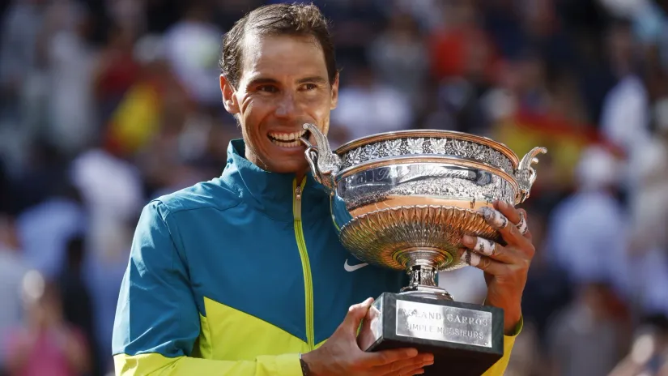

Rolan Garos spremio ceremoniju u čast Nadala
Rafael Nadal i njegova dostignuća na Rolan Garosu biće posebno obeleženi ove godine
Čelnici drugog grend slema sezone u Parizu, spremaju u nedelju 25. maja, prvog dana turnira, ceremoniju posvećenu rekorderu turnira, Špancu Rafaelu Nadalu.
Teniser iz Manakora je obeležio protekle dve decenije igranja na čuvenoj pariskoj prašini, osvojivši 14 titula Rolan Garosa. Poslednji meč na turniru odigrao je prošle godine kada je izgubio u prvom kolu u tri seta od Aleksandera Zvereva.
Kako najavljuju iz Pariza, organizatori pripremaju Nadalu niz iznenađenja, a poznato je da će tokom turnira biti upriličen egzibicioni meč u njegovu čast. "Nisam baš za posvete, ali Rolan Garos je očigledno najvažnije mesto u mojoj karijeri. U to nema nikakve sumnje. Ako nešto veliko treba da se uradi, onda mora da bude tamo ili bi barem tome trebalo dati prioritet. Tako sam i planirao od početka, ništa više. Oduševljen sam što je tako", kaže Nadal, koji od pre nekoliko godina u kompleksu terena u zapadnom Parizu ima svoju statuu.
Direktor Rolan Garosa Ameli Morezmo nije želela da otkriva previše detalja o svečanosti. "Želimo da odamo priznanje Rafi i da proslavimo sve sa njim na pravi način. Tih 14 titula koje je ovde osvojio su nešto posebno za njega, postoji ta posebna veza između njega i našeg turnira. On takođe želi nešto prosto, autentično i iskreno, kao što je i on sam. Pokušavamo da sve to sredimo", izjavila je Morezmo.